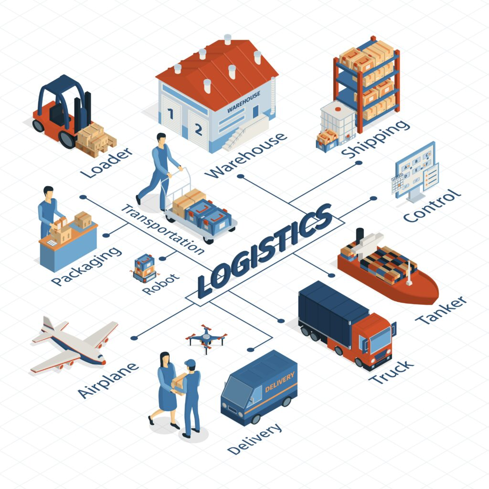
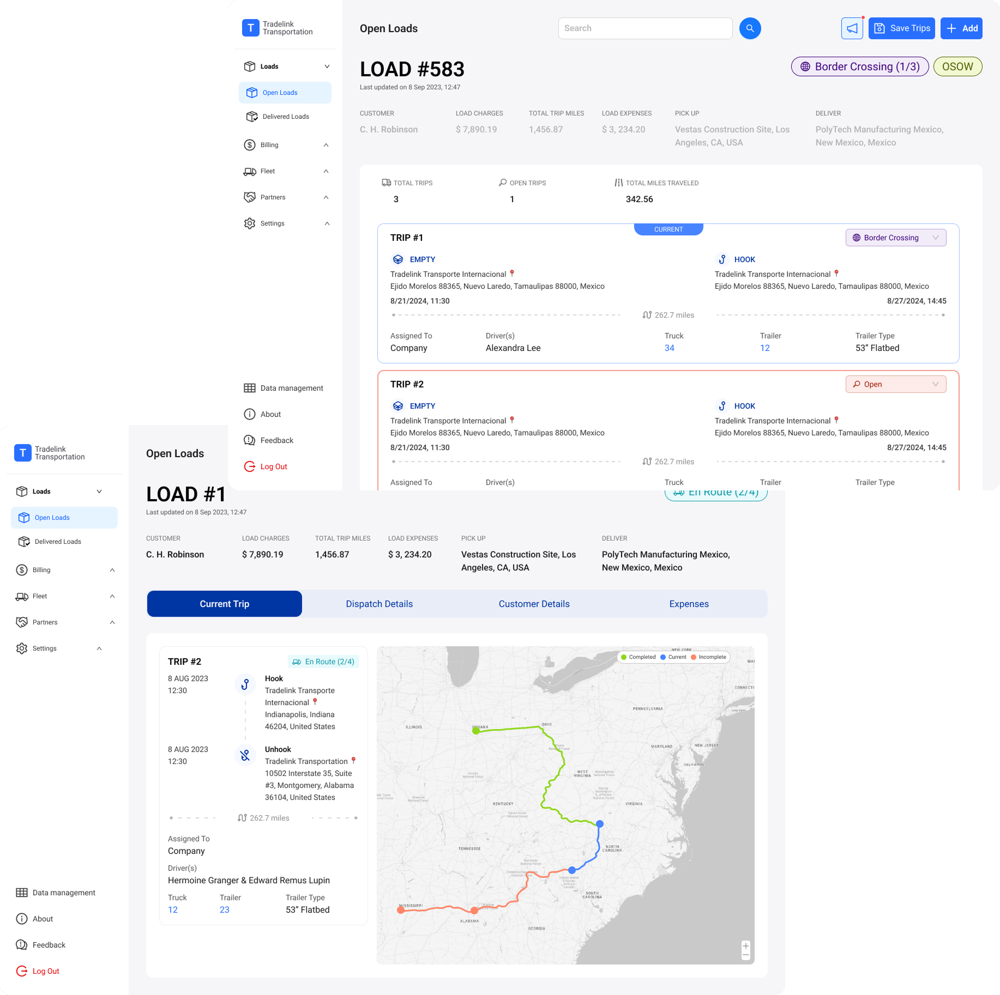

(TMS) Transport Management
System Web Application

Tradelink, now known as HummingbirdTMS, is a SaaS transport management system designed for logistics companies in the US and Mexico. The platform helps logistics teams manage deliveries, drivers, trucks, documents, and cross-border operations in one centralized system.
My focus was to design a workflow that made logistics operations easier to manage, especially for dispatchers handling complex delivery routes with multiple stops.
Many logistics systems do not fail because they lack features. They fail because they are too complex to operate efficiently.
When studying existing systems such as AlwaysTrack, I noticed a key limitation: users had to create multiple loads just to complete a multi-stop delivery.
This created several operational issues:
Instead of supporting how logistics teams actually work, the system forced users to adapt their workflow around system limitations.
The product goal was to create a transport management experience that supported real-world logistics operations more naturally and efficiently.


Dashboard PreviewThe main users are logistics teams, especially dispatchers and operations staff, who are responsible for managing loads, drivers, trucks, delivery statuses, and documentation.
These users need to make fast decisions in a high-pressure environment. They are not simply thinking in terms of software features. They are thinking:
"How do I move this delivery from point A to point B, with multiple stops, as efficiently as possible?"
Solving this problem would help users reduce repetitive work, track delivery progress more clearly, and manage operational complexity with greater confidence.
I approached the project by designing around real logistics workflows instead of designing around system constraints.
1. Competitor analysis
I studied existing systems such as AlwaysTrack to understand how current platforms handle multi-stop deliveries and where friction existed.
2. Workflow mapping
I broke down how dispatchers create, assign, track, and manage deliveries to identify unnecessary steps and decision points.
3. Information architecture
I organized key operational data so users could scan loads, statuses, drivers, trucks, and delivery information quickly.
4. Prototyping
I translated the workflow into dashboards, tables, and task flows to test how the system would function in realistic scenarios.
5. Stakeholder walkthroughs
I reviewed the design through operational scenarios to validate whether the flow supported business and user needs.
I started by understanding how logistics teams manage deliveries in real situations.
I looked at how dispatchers create a load, assign a driver and truck, manage several stops, track delivery progress, and handle documents. From this, I found that the main issue was not only the interface. The bigger issue was how the workflow was structured.
In some systems, users had to create a separate load for every stop. This made the process repetitive and harder to manage. To solve this, I designed the workflow so that one load could include multiple delivery stops.
This made the process simpler and closer to how dispatchers actually plan deliveries.
For the visual design, I used a white and blue color system. Blue helped the product feel reliable and professional, while white space made the dashboard easier to read.
Primary
#2B6FFF
Secondary
#FFFFFF
Tertiary
#003692

The main insight was that dispatchers do not want to spend time managing a complicated system. They want to manage deliveries quickly and clearly.
A multi-stop delivery should feel like one connected delivery, not several separate tasks.
I also learned that clarity is very important in logistics. Dispatchers need to quickly see what is happening, what needs attention, and what action they should take next.
These insights shaped the design decisions:
These decisions helped create a product experience that supports both daily user tasks and business operations.

The final solution was a SaaS transport management interface that allows logistics teams to manage delivery operations from one centralized platform.
The system allows users to:
The most important solution was the multi-stop load structure. Instead of forcing users to create multiple loads for one delivery route, the system supports multiple stops within a single load.


Dashboard OverviewThe redesigned workflow helped create a more efficient and operationally realistic transport management system.
The impact included:
Instead of managing unnecessary system complexity, users could manage a platform that supported their actual work.

This project reinforced the importance of designing systems around user behavior, not just product features.
What went well was the focus on real-world workflow logic. By identifying that multi-stop deliveries should exist within one load, the design solved a deeper operational problem rather than only improving the interface visually.
What could be improved in the future is deeper validation with more dispatchers and logistics teams. With more time, I would conduct additional usability testing, compare task completion time between the old and new workflow, and gather more quantitative data on efficiency improvements.
This project helped me strengthen my approach to designing complex SaaS systems: understand the user's mental model, reduce unnecessary steps, and create interfaces that improve both user experience and business efficiency.